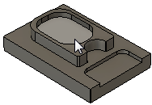
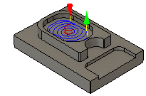
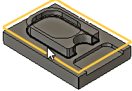
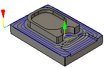

Sélection de la face d'une poche ouverte
Trajectoire d'outil de la poche ouverte
Sélectionnez une face, une arête ou une esquisse pour définir les limites de l'usinage. Utilisez la sélection d'arête pour les zones qui comprennent des perçages ou pour les poches qui contiennent d'autres poches. Pour les bossages verticaux, sélectionnez la limite extérieure du bossage et cochez l'option Contours de brut affichée ci-dessous. La trajectoire d'outil sera calculée entre la limite sélectionnée et la zone extérieure du brut.
 |
 |
Sélection de la face d'une poche fermée |
Trajectoire d'outil de la poche fermée |
|
|
Sélection de la face d'une poche ouverte |
Trajectoire d'outil de la poche ouverte |
 |
 |
Sélection de l'arête d'un bossage avec du brut |
Dégagement d'une zone avec un bossage vertical |
Si vous sélectionnez des faces qui comprennent des perçages ou des poches, la trajectoire d'outil adaptative estimera que ces ouvertures ont déjà été dégagées et ne les usinera pas. Utilisez les options Arête ou Esquisse pour sélectionner la zone à usiner.